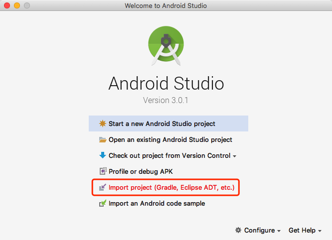
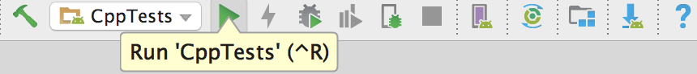
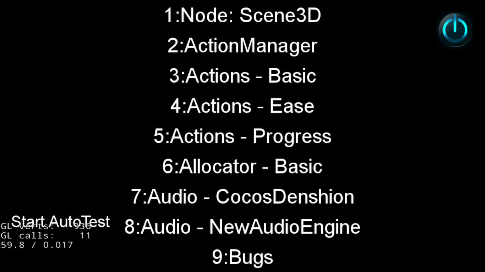
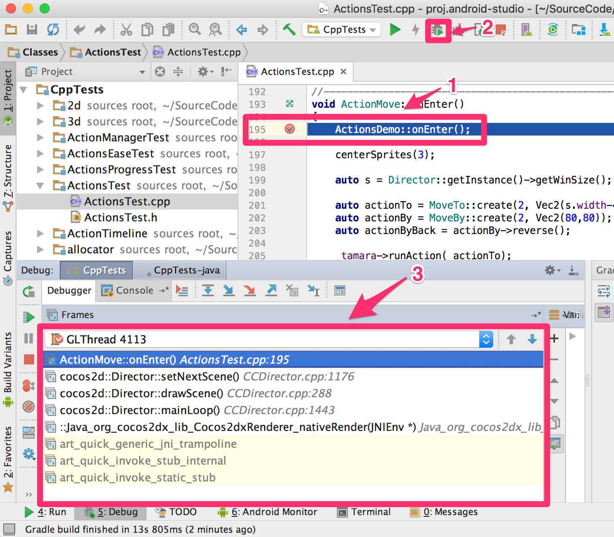
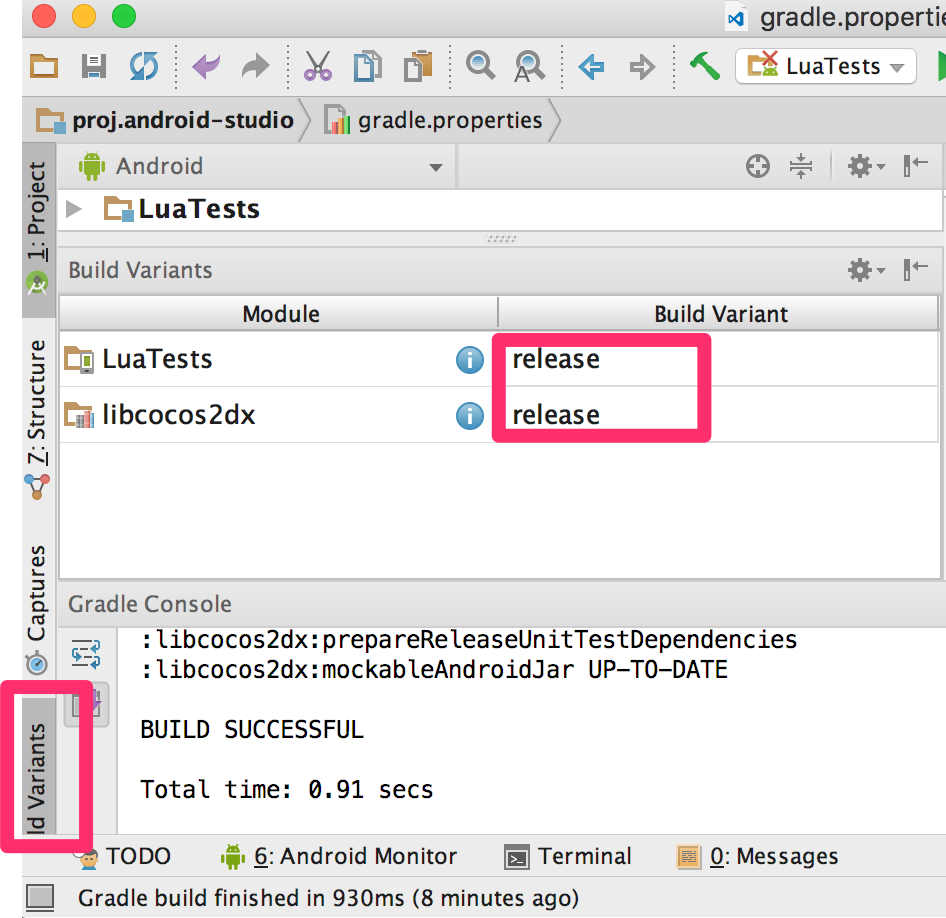
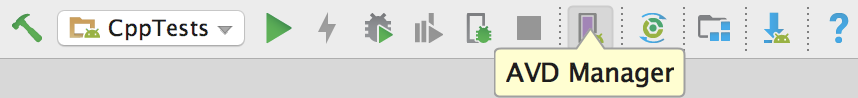
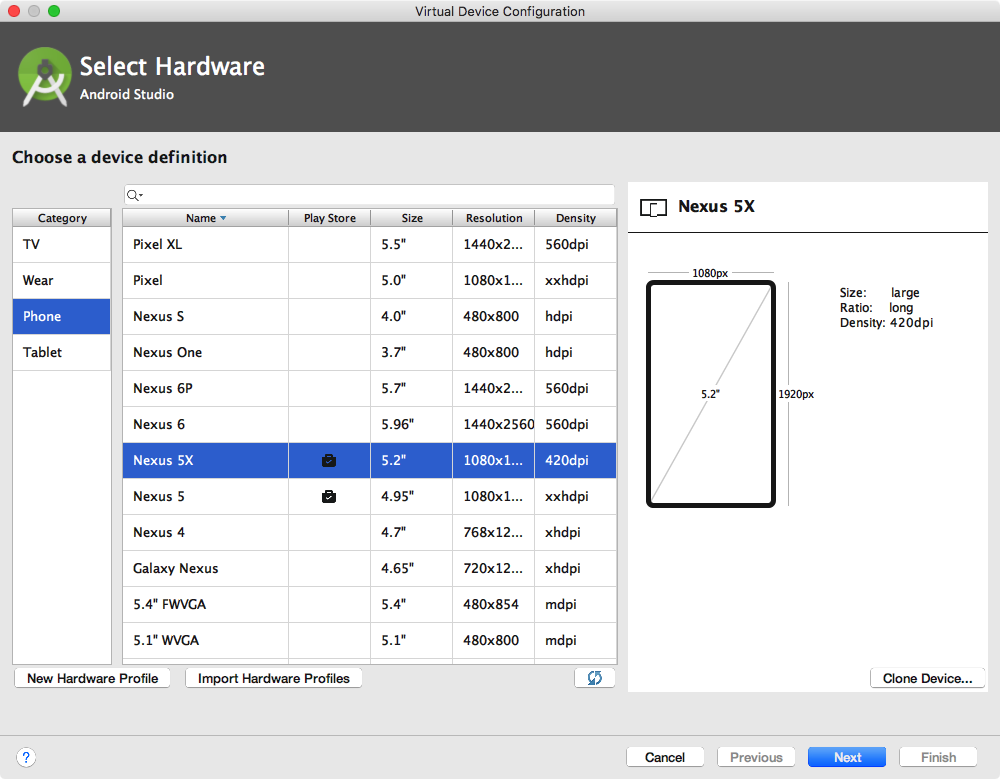
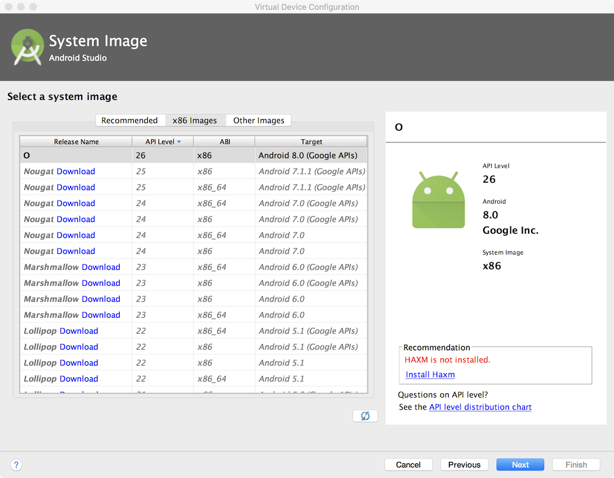

搭建开发环境 - Android 平台
工具准备
- Android Studio v3.0+， 下载参见：Google 中国开发者网站
- cocos2d-x v3.17，下载后解压，下载参见：Cocos 官网页面
配置步骤：
完成 Android Studio 安装，进入欢迎界面，选择
Import project(Gradle, Eclipse ADT, etc.)。选择目录cocos2d-x root/tests/cpp-tests/proj.android-studio，点击OK进入 IDE 主界面。
第一次导入 cocos2d-x 工程，控制台会提示缺少组件，点击提示下方的链接，下载安装即可。提示类似：
Gradle sync failed: Failed to find Build Tools revision 27.0.1组件安装完成，点击工具栏
Run，进行编译运行，编译过程可能会花费一点时间。
选择运行应用的设备，IDE 将自动安装应用，并控制应用展示主界面。建议直接使用 Android 手机接入电脑作为设备进行测试。这样应用会有较快的运行速度。运行成功界面：

如何调试(Debug)
Android Studio 2.3+ 已经支持 C++ 代码的调试，按照以下步骤，进行 cpp-tests 的调试
- 点击代码行左侧的空白，设置断点
- 以 debug 模式运行 cpp-tests
操作 App 触发断点，IDE 将卡在断点处，在底栏打开
Debug视图，可以查看运行堆栈和变量的值
如何打包
按照下面的步骤，构建 App 的发布(Release)版本
- 将 Build Variant 设置为 release 模式
- 在 gradle.properties 文件中，添加签名信息
对于 Lua 项目，如果想加密 Lua 代码，也需要在 gradle.properties 文件中添加签名信息
不清楚 gradle.properties 中属性的作用时，请阅读注释。

模拟器的创建
点击工具栏
AVD Manager进入模拟器的管理界面。
在
Android Virtual Device Manager界面左下角，可以看到按钮Create Virtual Device...，点击进入Choose a device definition页面，选择设备，此处选择只决定了尺寸和分辨率，与设备中运行的系统无关。此处选择Nexus 5X，选择后点击Next，进入选择系统镜像页面。
在
Select a system image界面，选择系统镜像，此处选择决定了设备的API Level和ABI。API Level代表了 Android 系统版本，如 API Level 24，代表 Android 7.0 系统。ABI是与CPU相关的一个参数，模拟器多为 x86，真机多为 ARM。
选择完成，点击 Next，进入
Verify Configuration，点击 Finish 结束。
FAQ
如何使用 x86 架构的模拟器运行 cpp-tests 项目？
在项目中找到 gradle.properties 文件，将 PROP_APP_ABI=armeabi-v7a 修改为 PROP_APP_ABI=x86，点击提示中的 Sync Now，完成后重新编译运行。
更多关于 ABI 的信息请参考 Google 文档 ABI 管理
Cocos2d-x 的 Android 工程配置好复杂，怎样怎能弄清楚？
Cocos2d-x 使用的工程配置是标准的 Gradle 配置，请先阅读 Gradle 文档 中的 Android 部分，从理解简单工程的 Gradle 配置开始。
在 Windows 系统上通过 Android Studio 编译项目有路径错误？
甚至每次报错的路径都不一样，什么原因？
Windows 系统对于文件的路径有最大长度限制，如果将引擎根目录放的比较深，可能会引起这种问题。建议将引擎根目录 cocos2d-x 放置到磁盘根目录。